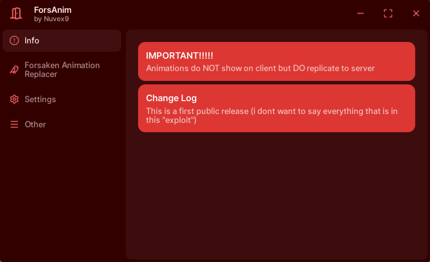
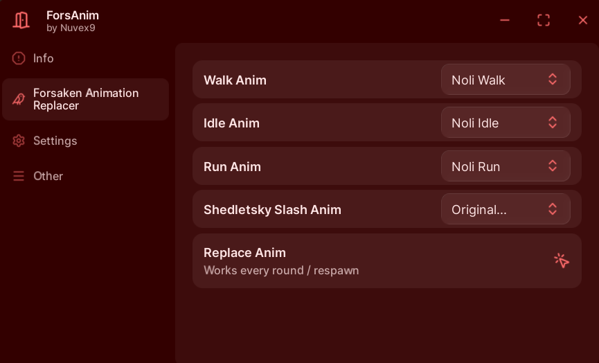
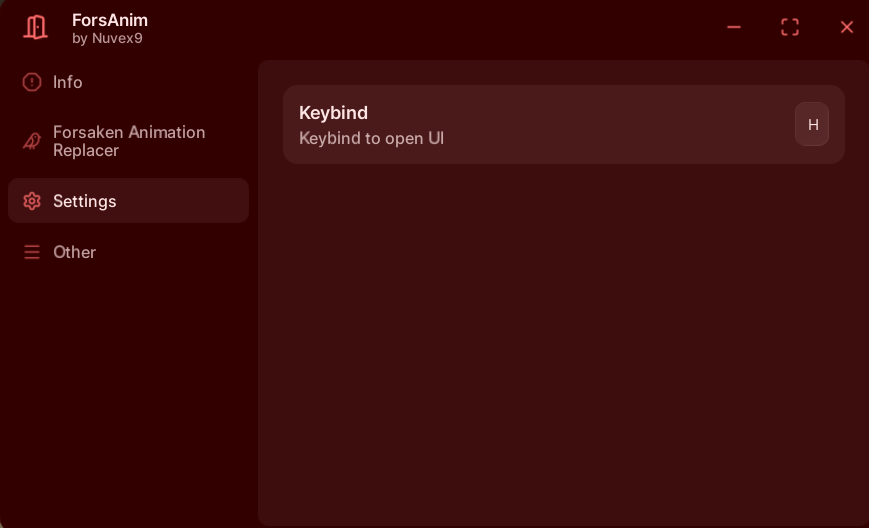

Animation override script for Forsaken
Swap animations with custom ones in real-time.
Preview animations across different characters.
Fast and minimal script execution.
ForsAnim is a simple script designed for experimenting with animations in Forsaken. Replace animations, preview them on different characters, and test custom setups safely.



ForsAnim has an issue were you cant see the animations on the client it self, but everyone else can see them i will try to fix it as soon as possible
Use responsibly in a safe testing environment. ForsAnim does not modify Roblox files directly, but using it may violate game rules. I'm not responsible if your account is banned or penalized.